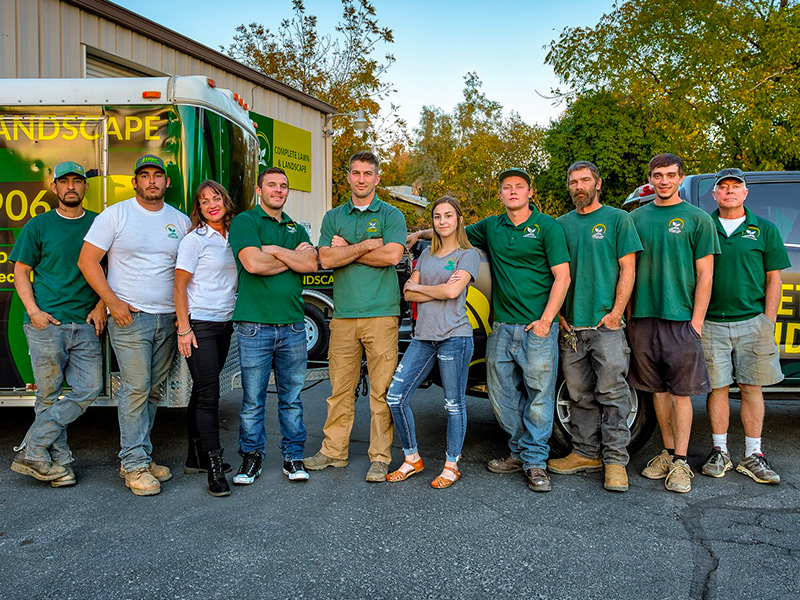

We are a dedicated team of landscaping professionals with a mission to transform your outdoor space into a beautiful and functional environment. Our values are rooted in quality, creativity, and customer satisfaction.
Welcome to Precious Aliyah Landscape & Services, where we bring your outdoor dreams to life. Founded in [Year], our mission has always been to transform landscapes into stunning, functional spaces that reflect the unique vision of each client.
Our team of experienced professionals is dedicated to delivering high-quality landscaping services, from design and installation to maintenance and seasonal cleanups. We take pride in our attention to detail, creativity, and commitment to customer satisfaction.
At Precious Aliyah Landscape & Services, we believe that a well-designed outdoor space can enhance your quality of life, providing a serene retreat for relaxation and enjoyment. Let us help you create a landscape that you will love for years to come.